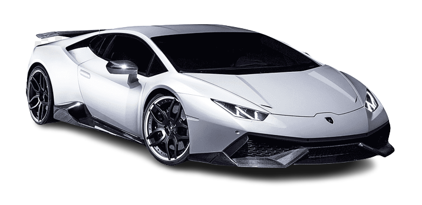
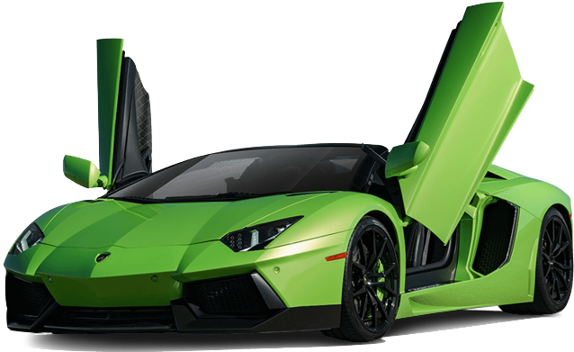
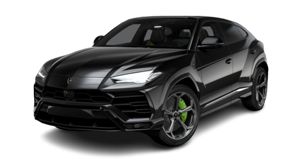

HURACÁN
Discover all the new models of this exclusive car family, created to shape
to your deepest emotions. Combining the highest expression of
Lamborghini’s power with the exclusive refinement of Italian handicraft,
this series embodies authentic design and state-of-the-art mechanical
technology. The Lamborghini Huracán is the perfect fusion of technology
and design. With its crisp, streamlined lines, designed to cut through the
air and tame the road, you’ll get a thrill just by looking at it. The only thing
better than taking in this beauty from a distance is actually touching it.
The finest Italian craftsmanship lavished on finishes of unprecedented
prestige and quality.
DESIGN
Sculptured and sensual, the Huracán’s design is based on the spiky
hexagonal forms of the carbon atom, while the seamless roof profile is
an unmistakable mark of the Lamborghini DNA. The Huracán is unique
even in the dark, thanks to the alluringly “technological” light of its
full-LED lighting system. Choose your favourite Lamborghini Huracán and
discover its technical specifications.

AVENTADOR
DESIGNED TO PUSH BEYOND PERFORMANCE
Revolutionary thinking is at the heart of every idea from Automobili Lamborghini. Whether it is aerospace-inspired design or technologies applied to the naturally aspirated V12 engine or carbon-fiber structure, going beyond accepted limits is part of our philosophy. The Aventador advances every concept of performance, immediately establishing itself as the benchmark for the super sports car sector. Giving a glimpse of the future today, it comes from a family of supercars already considered legendary.
DESIGN
Each and every detail of the Aventador bears the hallmarks of the House of the Raging Bull. It is a true masterpiece of design that expresses dynamism and power, with the carbon-fiber monocoque the jewel in its crown. The interior combines high-level technology and luxury equipment, crafted by skilled artisans using

ÚRUS
Lamborghini Urus is the first Super Sport Utility Vehicle in the world, merging the soul of a super sports car with the practical functionality of an SUV. Powered by Lamborghini’s 4.0-liter twin-turbo V8 engine, the Urus is all about a performance mindset that brings together fun-to-drive and astounding vehicle capabilities. The design, performance, driving dynamics and unbridled emotion flow effortlessly into this visionary realization of authentic Lamborghini DNA.
DESIGN
A declaration of freedom, Urus enables you to discover any terrain, from track to sand, ice, gravel or rocks. It is the absolute all-round super sports car and more. It allows you to explore new paths and new ways to express yourself—to accept challenges confidently and to live life to the fullest. You are not afraid to go far: this is what you aspire to. Unlock any road, unlock your personality.
